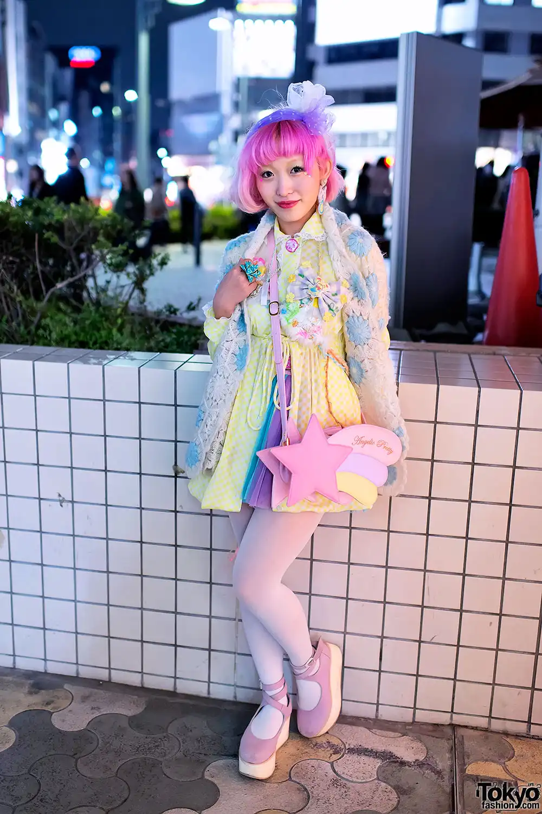
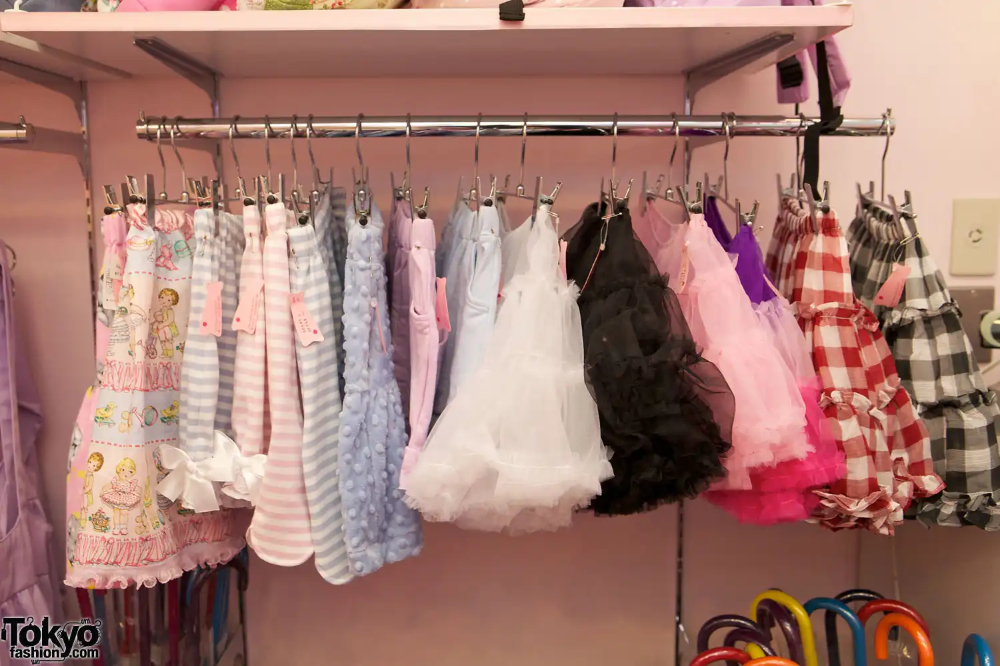
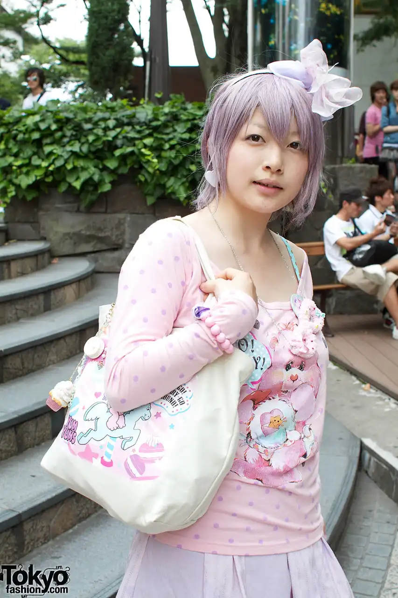
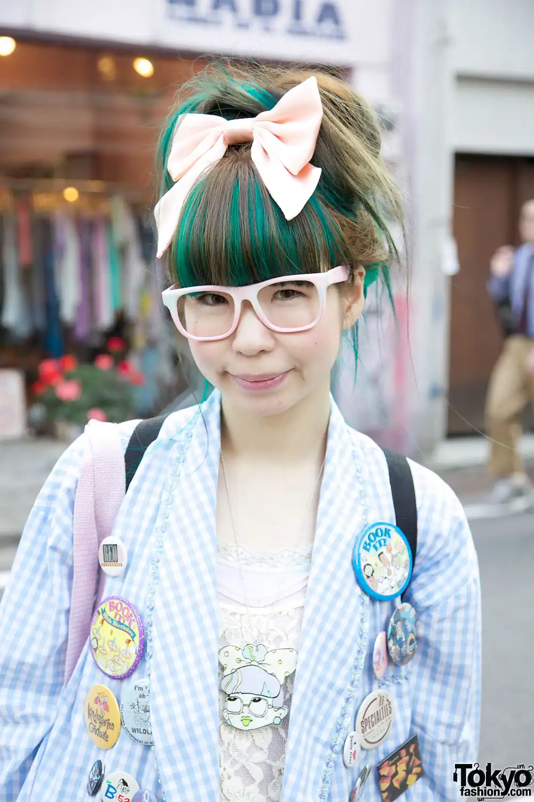
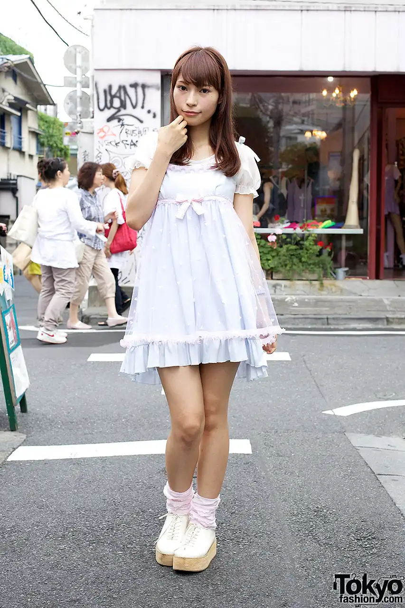
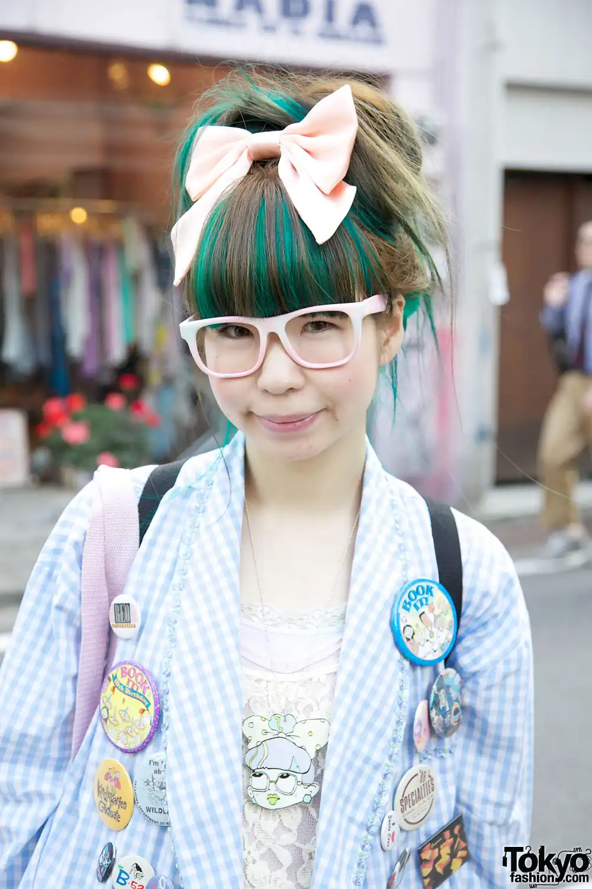
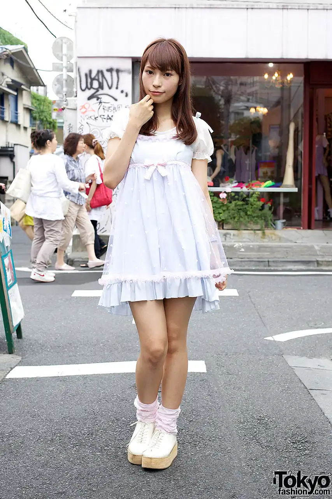
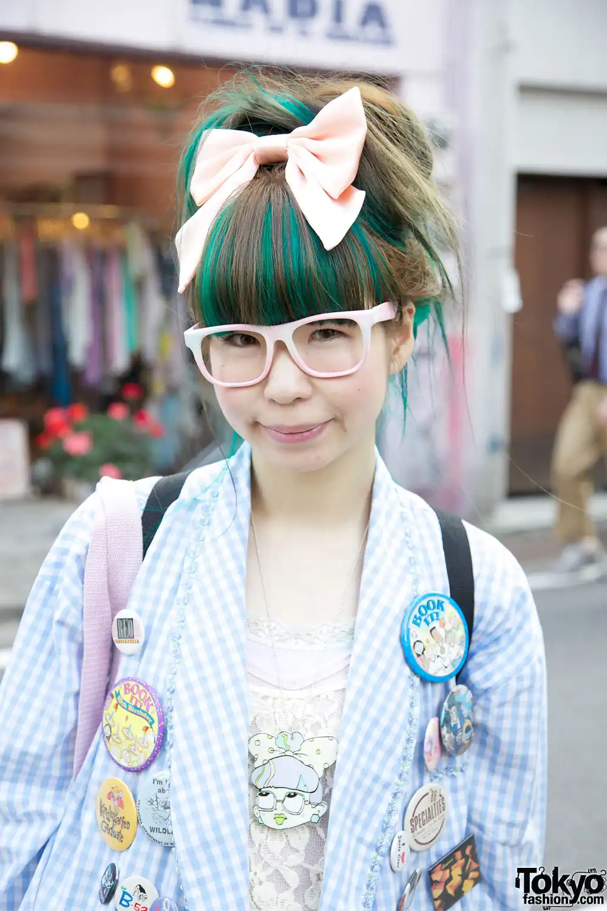
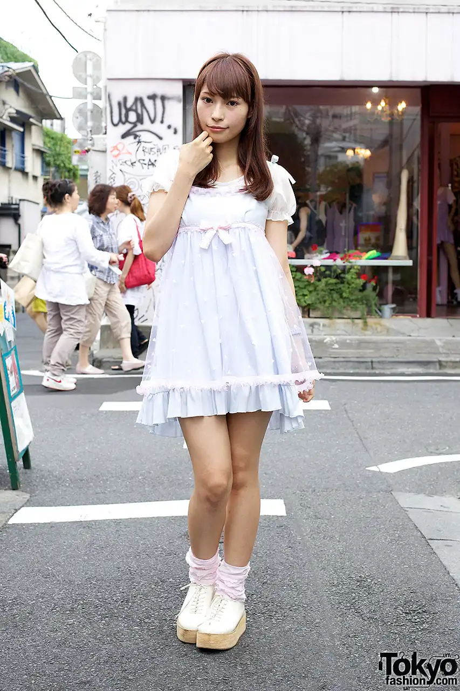

Fairy Kei fashion is a pastel-hued, whimsical style that emerged from Japan's Harajuku scene in the 2000s. It is heavily inspired by 80s pop culture, with influences from toys, cartoons, and vintage aesthetics like My Little Pony, Care Bears, and Barbie. Outfits typically feature soft colors like lavender, baby pink, mint green, and sky blue, often layered to create a dreamy, childlike look. Fairy Kei clothing includes oversized sweaters, tulle skirts, and printed t-shirts adorned with cute, retro graphics. Accessories are key, with pieces like colorful hair clips, chunky necklaces, and bracelets shaped like stars, hearts, or bows. Makeup is kept light and sweet, with gentle touches of pink blush and shimmery eyeshadow to match the pastel palette. Hair is often styled in soft waves or ponytails and sometimes dyed in pastel shades to complete the ethereal look. Fairy Kei fashion celebrates a sense of nostalgia and innocence, creating a playful escape into a fantasy-inspired world.

fairy kei
what's fairy kei?
characteristics



 




